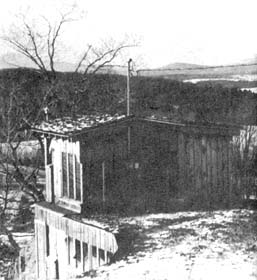

Two young Plainfield, Vermont builders - Tim Rice and Steve Jacob - have decided that the time is right for a revival of the old-time sod roof. They just may be right. Sod roofs are largely free for the labor, the materials are easily found in most back yards, sod is one of the most fireproof materials going and it makes excellent insulation for all but the most severe climates (some Vermonters with turf-topped homes have seen 50 below with no complaints).
According to Tim and Steve, there's no reason why anyone building a house couldn't top it with sod . . . at least with a little advance planning. The stud construction of the typical frame structure, for instance, doesn't lend itself to sod roofing but log cabins and buildings of post and beam design are especially well suited for such a topping. The "yes or no" difference is in the amount of weight each type of structure will support.
Allowing for snow loads and your family gathering for summer breakfast on top of the house, figure that the beams and rafters under a sod roof will have to carry 100 pounds per square foot. This is twice as much weight as is supported by the corresponding beams and rafters under an ordinary roof.
Many early homesteaders selected the wood for their sod roofs' joists and supports by eye and used the byguess-and-by-gosh method of calculating the timbers' dimensions. Such a trial and error approach can be pretty expensive and I don't recommend it . . . but if you insist on giving it a try, be dang sure to build your roof's substructure about twice as strong as you think seems reasonable. Better yet, forget such guesstimations entirely and get some professional help with the calculations.
If you live near a university, you can probably find an engineer who'll figure out the underpinnings of your house's sod top for a very small fee. Almost any reputable building supply house will help you with the calculations too . . . especially if the folks working there know that you intend to order materials from them.
Tim, who enjoys sharing his knowledge and experience with the construction method, advises that a sod roof works best when it has some but no more than four inches of pitch - or fall - to the foot. He says, though, that a perfectly flat roof can be made watertight if it is carefully planned. (EDITOR'S NOTE: Judging from the near-45° slopes on the sides of one of the houses shown here, a pitch of far more than four inches can also be made to work satisfactorily.)
Flat roof or steep, however, be sure to check your local building codes before beginning the construction of any sod-topped lodge. And don't back down at the first sign of opposition . . . the resistance may be based on personal rather than legal grounds.
OK. Let's assume you properly calculated your new home's roof timbers, you squared everything with the building inspector and the structure is up and ready to be topped. Cover the roof framing with board sheathing or plywood and cover that, in turn, with 50-pound smooth-surfaced or mica-surfaced asphalt roll roofing.
The roll roofing is applied in horizontal strips, starting at the bottom of the slope and working up. The lower edge of each strip should overlap the sheet below by three inches, the lap itself should be sealed with salvage cement and galvanized roofing nails should be spaced every six inches along each lap and around the perimeter of the roof. Once you've worked your way - strip after overlapping strip-up each slope to the roof's peak, apply a generous layer of salvage cement to the entire surface. This sealer is also called double coverage or black plastic cement. Do NOT let a building supply salesman sell you roofing tar.
Allow the cement to dry for a couple of hours. Its top will crust over but the underneath will remain soft and flexible (creating a resilient bed for the sod).
Next, spread a continuous sheet of black, six-mil polyethylene plastic across the dried cement: The poly is available from any agricultural supply dealer and you must be sure to use black (which will last 50 years) instead of clear (which breaks down much sooner). You'll probably have to walk across the plastic as you smooth it down and - i f you do - walk carefully to avoid putting holes in the sheet.
Although not absolutely necessary, it's a good idea to apply another coating of cement and a second layer of black plastic over the first ... just for insurance. There's no need to coat the top of the final poly sheet, however: grass roots will grow through the cement and through the roll roofing, but they won't grow through the plastic.
The ideal place to get your sod is right from the building site itself. You'll never miss it, there's no closer source of supply and-since sod can be stacked without damage for several months-it should keep in good shape from the time you start your house's foundation until you're ready to put the turf on the structure's top.
Anything from six to ten inches will do, but eight inches is the ideal thickness for roofing sod. The turf should be fairly "tight" and grass is better than weeds (although the latter will do) because grass has a finer root pattern. This tighter root pattern gives grass sod more holding power and insulating qualities (six inches of good turf is equivalent to about three and a ,half inches of fiberglass insulation). Forget any visions you have about growing a small forest on your roof, however, because the roots of trees and shrubs can penetrate the cement, plastic, roll roofing, and sheathing (clearing a path for rain to do the same).
If you can't or don't want to dig the sod yourself, you can hire someone with a front end loader on a tractor to do it. Tell the operator to skim up an eight-inch layer of turf, then hop in the bucket and cut the large sheet of sod into pieces small enough for you to handle. At that point, the operator can raise the bucket to roof level for easiest unloading.
Lay the sod in whatever sized sections feel most comfortable to you and try to work most of the stones out of the chunks of dirt before you put the turf in place. Strive for no stones at all but, if you do miss a few, don't let it worry you. The flexible bed you've created will conform to their shape.
When the roof is completely covered, chances are you'll notice that the surface of the sod is uneven due to the varying thickness of individual pieces of turf. Don't worry about it. Just rake some extra dirt into the low spots until the surface of the sod is level. Any grass you cover will grow right up again.
To keep the wind and rain from eroding your roof away, line its perimeter with cedar logs. Cedar is bug and rot resistant and will last a long, long time. Spike the logs down on top of the eaves but do not, of course, nail through the under layers of roofing and cause a leak. If an accident does happen, however, you'll be pleased to know that sod roofs - unlike most others - are remarkably simple to repair: Pull up three or four square feet of turf in the general area of the leak and thoroughly apply salvage cement.
That's about it. Armed only with this short explanation, you should be able to lay down a sod roof with the best of them. It's that easy ... so easy, in fact, that Tim Rice and Steve Jacob have already experimented with some eye-catching and interesting variations on the traditional turf house topping. One home they've built has a large window on the second floor that opens directly onto the sod roof of the first level ... which thereby doubles as a balcony and terrace. Another Rice-Jacob house features a sod roof which gently slopes all the way down to ground level: walking onto the top of that home is just like walking up a hill.
Is the sod roof really going to make a comeback? I don't know ... but I've interviewed a number of owners of Rice-Jacob turf-topped buildings, and found them all quite happy with the structures.
|
HAL M. LANDEN This home uses a unique method to cover the sides with sod to create a "house hill." |
HAL M. LANDEN Sod roofs work best with a slope of no more than 4 inches of vertical drop per horizontal foot. |
HAL M. LANDEN Cedar logs along the eaves protect against insect infestation. |
|
 HAL M. LANDEN You can walk out from the second floor of this house onto the green roof/sod roof of the first floor, which creates a grass-covered patio. |
|
|